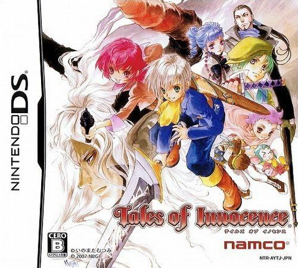

テイルズオブイノセンス
 2007年12月6日発売プラットフォーム：DS , PS Vita（リ・イマジネーション版）
シリーズ第9作目。
本作は前作の3D空間での戦闘システムを中心に、空中で技の発動が可能になったリメイク版『テイルズオブディスティニー』の要素を加えたものになっている。『テイルズオブシンフォニア』で採用されていた好感度システムに似た絆値というシステムがあり、主人公の行動によって各キャラクターの絆値が変動する形になっている。DS版では絆値によってラストバトルの会話の変化があったが、リ・イマジネーション版では削除されている。
本作は前世の記憶を持ち超人的な力を持つ異能者が中心になって物語が展開されていく。しかし、初めから完全な記憶を持っている訳ではなく、冒険を続けていくうちに記憶を取り戻していく。中には前世の因縁から敵に回るキャラクターもおり、前世の自分と今の自分は果たして同一のものと言っていいのか？ という前世を通して自分のあり方を見つめ直すようなストーリーとなっている。
リ・イマジネーション版において、ストーリーの改修が行われたが、ストーリーをエンディングまで進めても完全に謎が解けない部分がある。これからの作品でそれらが言及されることがあるのだろうか？